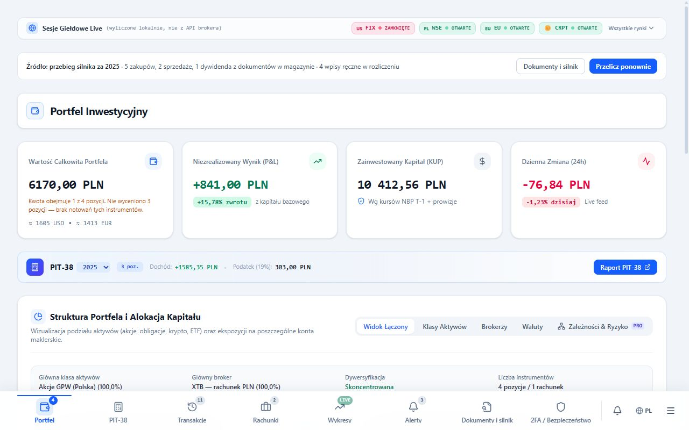

Każda kwota ma ślad dowodowy.
Plik→ Kurs NBP→ Partia FIFO→ Wyliczenie→ Podstawa prawna
Interfejs pokazuje wynik. Silnik Python liczy podatek. Rozliczenie z plików nie wymaga klucza API brokera.
InvestAnalyzer · lokalnie, bez chmury
Lokalna aplikacja dla Windows, która łączy portfel inwestora z deterministycznym kalkulatorem PIT-38 na podstawie plików brokera. Portfel, notowania i alerty działają też jako aplikacja na telefon (PWA) w przeglądarce.
PWA: portfel w przeglądarce. Rozliczenie PIT-38 wymaga wersji Windows lub lokalnego serwera z silnikiem Python.

Interfejs pokazuje wynik. Silnik Python liczy podatek. Rozliczenie z plików nie wymaga klucza API brokera.
01 / Od wyciągu do zeznania
Wyciąg zagranicznego brokera nie zastępuje rozliczenia w Polsce.
Przychody i koszty wymagają właściwego kursu. Silnik wybiera tabelę A z ostatniego dnia roboczego przed przychodem lub kosztem. Najpierw czyta lokalne CSV; brakujące kursy pobiera z NBP, jeśli fallback jest włączony.
Sprzedaż trzeba połączyć z zakupem. Silnik przypisuje najstarsze partie, także z historii wieloletniej, i oblicza koszty oraz dochód lub stratę. Sprzedaż ponad zapisany stan blokuje gotowość rozliczenia.
Silnik uwzględnia podatek zapłacony za granicą i dopłatę do 19% w Polsce. Odliczenie nie przekracza polskiego podatku od tego dochodu. Pakiet PIT-38/PIT-ZG i eksport do e-PIT pomagają przenieść sprawdzony wynik do zeznania.
02 / W środku aplikacji
Dane syntetyczne we wszystkich widokach.
03 / Architektura
Ten sam interfejs, oddzielny silnik podatkowy.
Prezentacja danych. Interfejs nie liczy podatku.
Serwer Express w web/dev. Powłoka Tauri w produkcyjnym desktopie, bez portu HTTP.
Sidecar onedir. Kontrakt JSON, FIFO, kursy NBP i PIT-38.
Dokumenty brokera, raporty, XLSX, JSON i pakiet PIT-38.
Pliki i wyniki pozostają na dysku. Silnik uzupełnia przez sieć tylko kursy NBP; notowania i integracje rachunków korzystają z zewnętrznych API.
Matematyka finansowa używa decimal.Decimal. Logika PIT, FIFO i NBP mieszka wyłącznie w silnik/python/.
Wynik łączy dokument, kurs, partię i wyliczenie. Brak kursu, historii nabycia albo kompletnego wejścia blokuje uznanie wyniku za gotowy do złożenia.
Pliki brokera, wyniki, kopie i logi pozostają poza kontrolą wersji. Bramka assert:no-private-data sprawdza pliki śledzone przez git.
Silnik blokuje gotowość do złożenia przy braku kursu NBP, sprzedaży ponad stan FIFO, konflikcie wyciągów, niekompletnym wejściu albo kategorii wejściowej bez śladu w wyniku. Wynik ma wtedy status CALCULATION_BLOCKED i filing_ready: false.
Ręczne korekty, rozstrzygnięcia dowodowe i zamknięcia roku zapisują decyzje użytkownika. Kopie decyzji można przywrócić lub przenieść na inny komputer.
04 / Weryfikacja projektu
Ostatnie zapisane wyniki z README, stan na 2026-10-01. Daty sprawdzeń podano poniżej.
| Bramka | Wynik | Data sprawdzenia |
|---|---|---|
lint | PASS · kontrola typów | 2026-10-01 |
| Testy TS / serwera | 990 PASS | 2026-10-01 |
| Testy Python | 904 PASS | 2026-09-30 |
| Testy Rust | 110 PASS | 2026-09-30 |
perf:bundle | PASS · początkowy JS 464,9 kB / próg 500 kB | 2026-10-01 |
assert:no-private-data | PASS · kontrola danych prywatnych | 2026-10-01 |
Ostatni pełny npm run verify: 2026-09-30; tego dnia potwierdzono również testy Rust. Testów Python i Rust nie powtarzano 2026-10-01. Zielone testy nie zastępują sprawdzenia rozliczenia z dokumentami.
05 / Rozwój projektu
Wpisy z docs/dziennik-zmian.md.
Zmniejszono nagłówki i odstępy na wąskich ekranach. Akcje PIT-38 i rejestru transakcji mają układ w dwóch kolumnach, a filtry pozycji zajmują pełną szerokość. Sprawdzono portfel, wykresy i alerty na telefonie.
W hostingu pozycje portfela liczy przeglądarka: FIFO i koszt w PLN po kursach NBP T-1. Kwoty PIT-38 pozostają nieobliczone. Uproszczono informacje o wersji na telefon i ukryto panele wymagające lokalnego silnika lub integracji brokera.
Dodano wersję na telefon i przeglądarkę, instalację na ekranie głównym oraz API notowań i kursów. Hosting działa na Cloudflare Workers w planie darmowym, bez bazy danych.
Opublikowano statyczną stronę projektu ze zrzutami na danych syntetycznych. Przygotowano wydanie przenośne, sprawdzono paczkę i silnik oraz potwierdzono bramki jakości i ochrony danych.
Dodano panel kwarantanny, zgodę na odzyskiwanie bez kompletnej kopii i ponowienie doczytania widoków. Zmniejszono pakiet startowy oraz zabezpieczono odczyt wadliwych wpisów i dane użytkownika przy usuwaniu pozostałości demo.
Poprawiono przepełnienia alertów, portfela i wykresów oraz neutralny stan wyniku PIT-38. Komunikaty odzyskiwania wskazują etap błędu i identyfikator zapisanej kopii.
Ograniczono szerokość wyszukiwarki wykresów i filtrów alertów. Długie nazwy rachunków zawijają się w kartach; sprawdzono także wąski ekran blokady dostępu.
Ujednolicono portfel i PIT-38 w obu motywach. Okna otrzymały anulowalny stan oczekiwania i obsługę błędu, a odzyskiwanie zabezpieczono kopią i lokalną kwarantanną.
Poprawiono kolory panelu rozliczenia i zerowanie przewijania przy zmianie zakładki. Odczyt preferencji odrzuca wadliwe wartości, a dodawanie tickera blokuje równoległe wysłania; pełny verify zakończył się powodzeniem.
06 / Wybierz swoją wersję
Aplikacja na telefon w przeglądarce. Wersja przenośna dla użytkownika Windows. Repozytorium dla programisty.
Otwórz investanalyzer-app.dismonder.workers.dev i dodaj do ekranu głównego („Zainstaluj aplikację” w Chrome, „Dodaj do ekranu początkowego” w Safari). Działają portfel, notowania na żywo, wykresy i alerty; dane zostają w pamięci telefonu, dane portfela nie trafiają na serwer.
Rozliczenie PIT-38, import plików brokera i integracje brokera wymagają wersji Windows albo lokalnego serwera — telefon nie ma silnika Pythona. Hosting: Cloudflare Workers w planie darmowym, bez bazy danych.
Wydania i instrukcję instalacji znajdziesz na GitHubie. Uruchom program z kompletnego folderu paczki, razem z zasobami i katalogiem binaries. Node.js i systemowy Python nie są wymagane.
# W katalogu projektu, PowerShell
& ".\wydania\komputerowa\przenosna\najnowsza\InvestAnalyzer.exe"Dane aplikacji: %APPDATA%\InvestAnalyzer i %LOCALAPPDATA%\InvestAnalyzer. Wydania i ZIP-y: wydania/komputerowa/przenosna/wersje.
Wymagania: Node.js 20+ i Python 3.12. W katalogu repozytorium wykonaj:
npm install
py -3.12 -m venv silnik/python/.venv
silnik/python/.venv/Scripts/python.exe -m pip install -e "silnik/python[desktop,test]"
npm run devInterfejs: http://localhost:3000. Pliki brokera: dane/pliki/, poza git. Desktop wymaga także Rust (msvc), Visual Studio Build Tools i WebView2; uruchomienie: npm run desktop:dev.